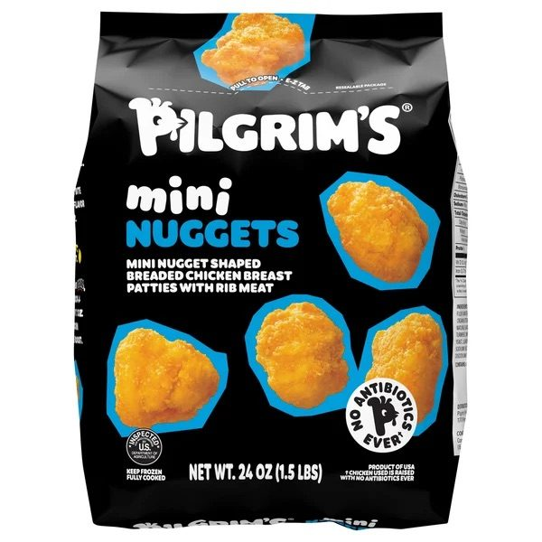
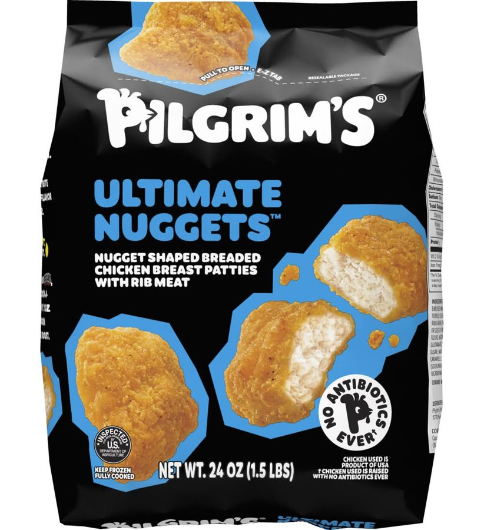
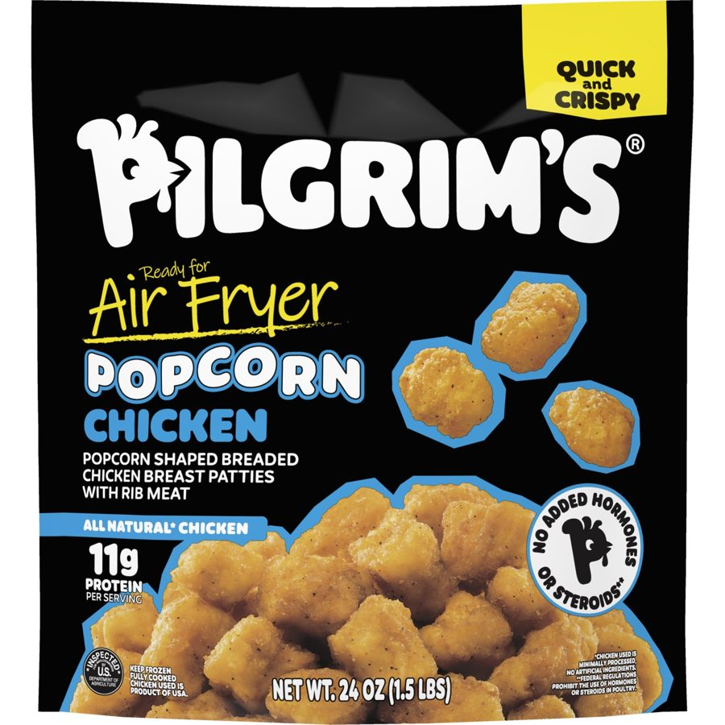
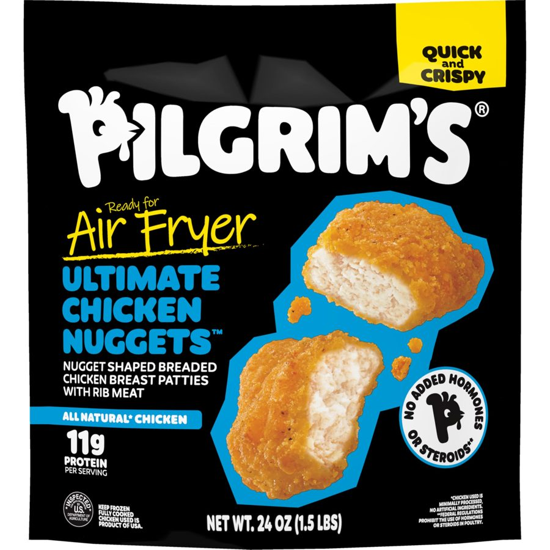

Pilgrim’s Brand Director 2025
The product was right. The name was wrong.
Pilgrim’s Mini Nuggets and Ultimate Nuggets shared a colour system and a shelf slot, and retailers kept putting them in each other’s facings. Meanwhile 75% of popcorn chicken buyers buy only popcorn chicken, and the brand had no bag speaking to them. One pillar rename fixed both problems.
in the category
buy only popcorn chicken
with pack size held
Velocity and share are post-launch reads on the renamed SKU. Cost saving delivered by the structural pack change.
Two products, one blue block. Retailers shelved them in each other’s slots.
This was a naming problem wearing a design problem’s clothes.
Mini Nuggets and Ultimate Nuggets shared the same black bag, the same cyan blue callout shapes and the same floating product silhouettes at the same scale. On a shelf they read as one product in two sizes. Store teams put them in each other’s facings, and shoppers looking for one found the other.

- Black ground, white logo, cyan callout shapes.
- Product floats at roughly the same scale as the sibling SKU.
- Pillar set in the same two-line blue and white lockup.

- Black ground, white logo, cyan callout shapes.
- Product floats at roughly the same scale as the sibling SKU.
- Pillar set in the same two-line blue and white lockup.
The two bags as they sat on shelf. Same ground, same accent, same product scale. This is what the store teams were sorting.
The name made it worse. “Mini Nuggets” told a nugget shopper this was a smaller nugget. It told a popcorn chicken shopper nothing at all.
Portfolio breadth was the second most common reason given for not buying Pilgrim’s among consumers unlikely to buy. The two forms those consumers named were tenders or strips and popcorn chicken.
Black Bag consumer study, January 2025
Pilgrim’s already made popcorn chicken. It was shelved under a name that sent it to the wrong shopper and into a fight with its own sibling.
Popcorn chicken is not a nugget substitute. It is a separate purchase.
The 75% number is the whole case. If three quarters of popcorn chicken buyers will not accept a nugget instead, then a bag that says “nugget” is invisible to them.
Rename the pillar. Same product, correct shopper.
Popcorn chicken was one of two forms consumers said the range was missing. Pilgrim’s was already making it under the wrong name.
The product did not change. The pillar name did. That one decision moved the SKU out of an internal shelf fight and into a form gap the research had already identified. It is the cheapest kind of portfolio growth there is.
The design then had to make the two products look as different as they now read.
What changed on the front panel, and why.
- Pillar reads “mini NUGGETS”, which sends the pack to the nugget shopper.
- Five pieces float at a scale that does not read as bite size.
- No convenience claim and no preparation cue.
- No protein claim on the front panel.
- Descriptor carries the only real product information.

- Pillar renamed to Popcorn Chicken and set at full width.
- “Quick and Crispy” flag in yellow, held in a fixed corner across the line.
- “Ready for Air Fryer” sits above the pillar as the lead benefit.
- A dense mounded bed of product shows true bite scale against the pack.
- 11g protein claim added to the front panel.
- Piece count and scale now do the separating, not the colour.
Left: prior production art. Right: the redesigned front panel.
- Many small pieces, shown loose and mounded.
- Reads as a snack you eat by the handful.

- Two oversized nuggets, cut open to show the whole breast inside.
- Reads as a centre-of-plate portion.
The two redesigned packs beside each other. The shared system stayed. The separation comes from product scale in the photography and from the pillar name, which is what a shopper resolves at distance.
| The change | The evidence behind it | Intended commercial effect |
|---|---|---|
| Renamed the pillar from Mini Nuggets to Popcorn Chicken | 75% of popcorn chicken buyers buy only popcorn chicken. Popcorn chicken was also one of two forms non-buyers named as missing from the range. BB | Opens a closed demand pool without a new product. Ends the shelf fight with Ultimate Nuggets and removes the mis-shelving that was costing both SKUs facings. |
| Rebuilt both photography treatments around product scale | Colour and design ranked above brand name and claims in what made the pack stand out, and the two old packs used the same colour and the same product scale. BB | Two products that read as two products from the end of the aisle. Scale is the cue a shopper resolves before they read anything. |
| Added a “Quick and Crispy” convenience flag | “Easy meals that are quick to prepare” is the number one need frozen fully cooked chicken is bought to meet, and ease of preparation ranks third of ten purchase attributes for Kidults against fourth for the category. FR | Answers the job the shopper hired the category for, in three words, from six feet away. |
| Added “Ready for Air Fryer” | Air fryer ownership and use kept climbing across the category. Preparation ease is what this buyer screens for after taste and price. FR | Removes the last hesitation for a shopper who wants a fast snack and does not want to heat an oven. It also stakes a preparation claim before competitors in the set did. |
| Added a prominent 11g protein claim | High protein is the top-ranked claim among Pilgrim’s buyers at 52% must-have and the top claim in the category overall at 47%. CL | Reframes a snack SKU as a protein snack, which is how the Kidult target justifies the purchase to themselves. |
The structure of the bag, not only the front of it.
Ease of use is the top need this category is bought to meet, so the fix could not stop at the artwork. The pack structure changed with it.
- 01
Side gussets to a bottom gusset
The bag stands and faces forward instead of slumping, so the front panel is actually presented to the shopper. A brand block only works if the block is pointed at the aisle.
- 02
Reseal that opens the full width
The old seal left roughly an inch closed at each end, so you could not get a hand in and could not pour cleanly. The new pack opens edge to edge, so you can scoop or tip the product straight into a basket.
- 03
10% material cost saving
The structural change took cost out of the bag rather than out of the product.
- 04
Pack size held
The saving did not come from reducing the count. The bag stayed at 24 oz, which keeps the price per ounce story honest and avoids the shrinkflation read that punishes brands at shelf.
#1 popcorn chicken brand in the category.
The pillar rename is the decision the result belongs to. Nothing about the product changed.
- 01
+12% dollar velocity
The commercial read on the renamed and redesigned SKU. Same product, same plant, new name and new pack.
- 02
Number one popcorn chicken brand in the category
The rename did not move volume across from Ultimate Nuggets. It took share in a form the brand previously did not compete in by name.
- 03
10% cost saving on the bag
Delivered by the structural change, with pack size held.
- 04
The shelf fight ended
Two SKUs that a store team can tell apart, which protects facings for both.
What I owned.
Diagnosed the mis-shelving as a naming problem and set the brief against the Kidult target.
Made the pillar rename call and defended it through line review.
Directed execution across both SKUs, set the scale contrast, approved final art.
Briefed and approved the photography that had to communicate bite scale.
Chose which claims earned the front panel and in what order they are read.
Specified the gusset and reseal change with packaging engineering and held pack size through the cost work.